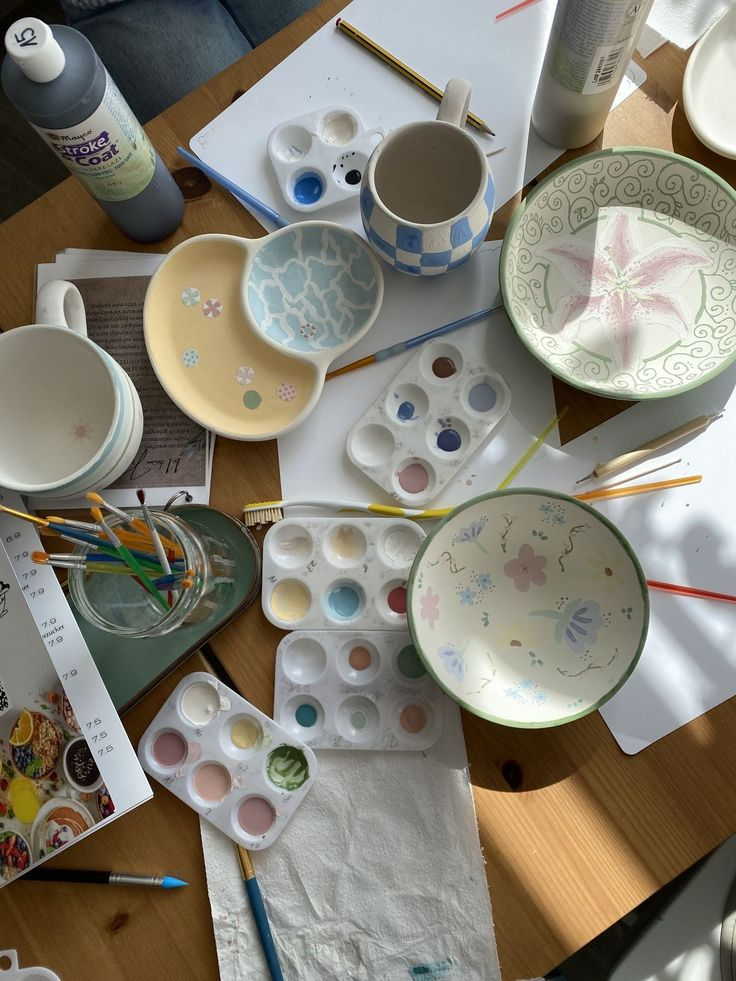
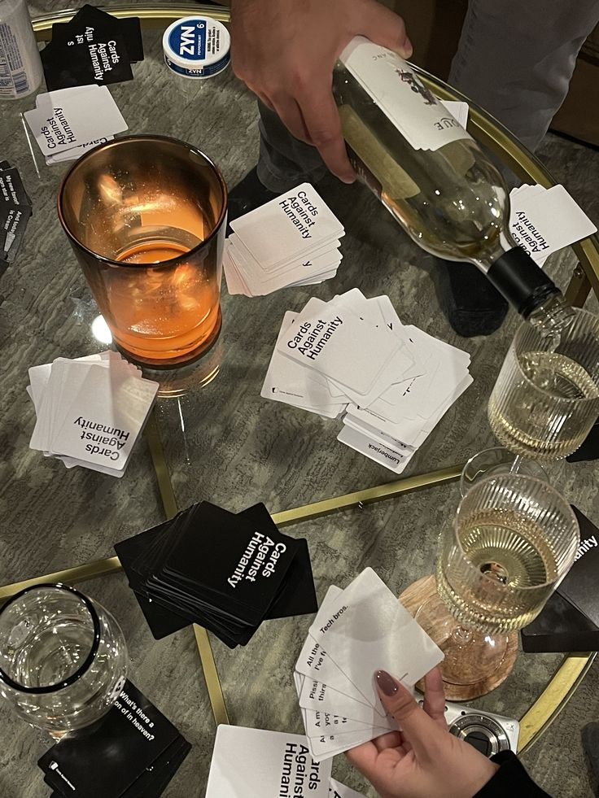
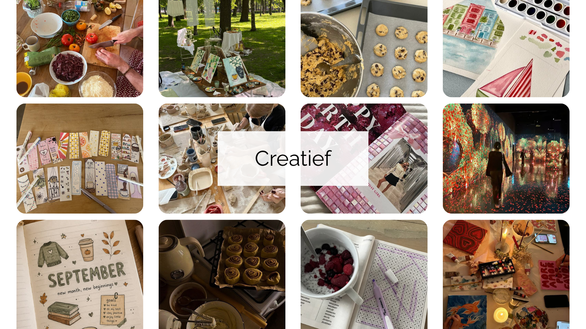
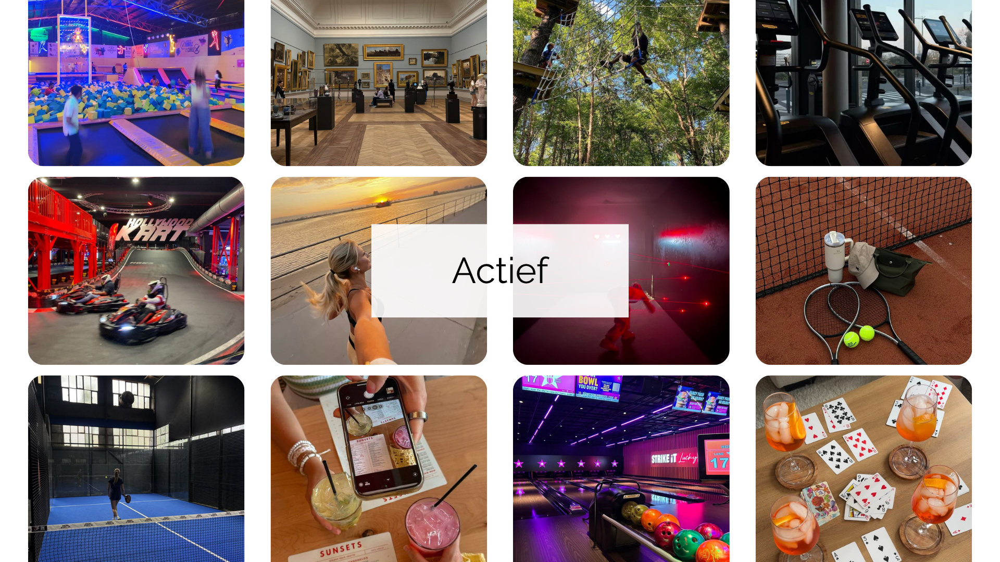
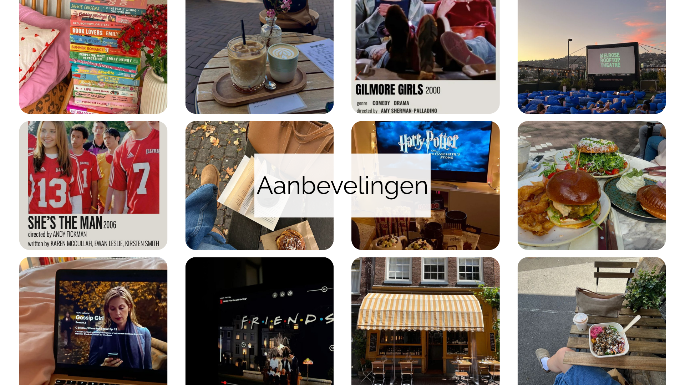
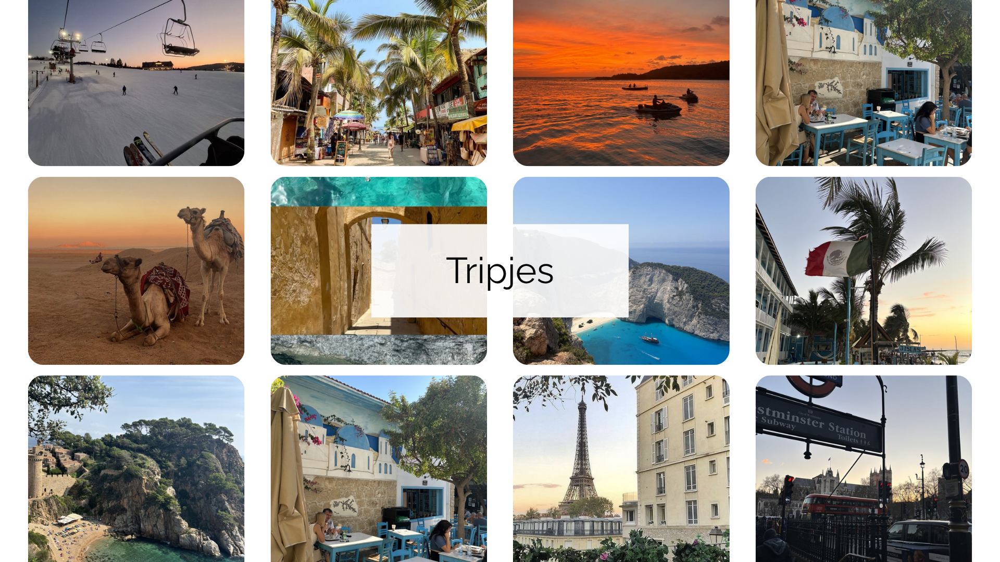

class: center, middle <!-- In deze textarea kan je in Markdown de slides aanpassen, zie https://github.com/gnab/remark/wiki voor alle mogelijkheden! --> # Lynn's digital garden --- # Inhoud <div style="text-align: left; display: inline-block; font-size: 1.5em; line-height: 1.8; margin-top: 1em;"> 1. Onderwerp<br> 2. Linkjes<br> 3. Ideeën<br> 4. Introtekst </div> --- # Onderwerp Een digitale gids van creatieve activiteiten in huis tot aan city trips en tips. <div style="display: flex; gap: 1.5em; justify-content: center; margin-top: 2em;"> <p></p> <p></p> </div> --- # linkjes <div style="text-align: left; display: inline-block; font-size: 1.2em; line-height: 1.4; margin-top: 0.8em;"> 1. <a href="https://immersive-g.com" target="_blank">https://immersive-g.com</a><br> 2. <a href="https://www.deptagency.com/en-nl/" target="_blank">https://www.deptagency.com/en-nl/</a><br> 3. <a href="https://www.seasats.com" target="_blank">https://www.seasats.com</a><br> 4. <a href="https://www.nga.gov" target="_blank">https://www.nga.gov</a><br> 5. <a href="https://paavandesign.com" target="_blank">https://paavandesign.com</a><br> 6. <a href="https://www.utwente.nl/stories/student/263896/de-leukste-solo-dates-voor-studenten/?tag=student-life&tag=student-tips" target="_blank">https://www.utwente.nl/.../de-leukste-solo-dates...</a><br> 7. <a href="https://pin.it/5lLWAmFGp" target="_blank">https://pin.it/5lLWAmFGp</a><br> 8. <a href="https://poolsuite.net" target="_blank">https://poolsuite.net</a><br> 9. <a href="https://lusion.co" target="_blank">https://lusion.co</a><br> 10. <a href="https://designspells.com" target="_blank">https://designspells.com</a> </div> --- # Ideeën <div style="margin-top: 5em; margin-left: 6em; margin-right: 6em;"> Activiteiten die ik ik leuk vind om te doen en aan anderen wil aanraden zoals: creatieve bezigheden, mooie tripjes, actieve groepsuitjes, en mijn favoriete kijk/leestips en hotspots. </div> --- # <p></p> --- # <p></p> --- # <p></p> --- # <p></p> --- # Introtekst <div style="margin-top: 5em; margin-left: 6em; margin-right: 6em;"> Met mijn digitale tuin wil ik andere inspireren om meer uit hun tijd te halen met jezelf maar ook met anderen. <br> Dit doe ik met mijn eigen foto's en inzichten, links en beelden die ik online vind. Zo ontstaat er een plek vol met inspiratie voor anderen. </div> <!-- Laat onderstaande staan anders breekt je presentatie -->